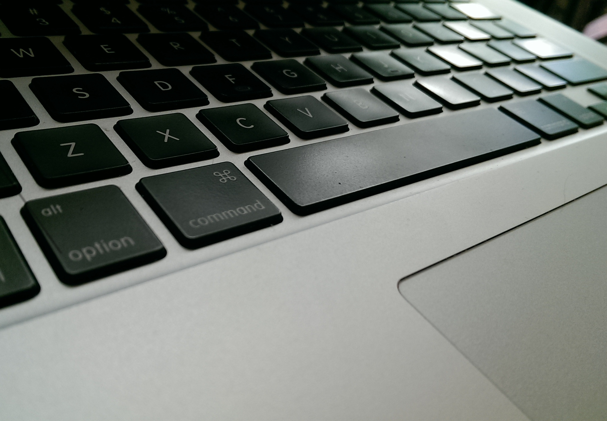
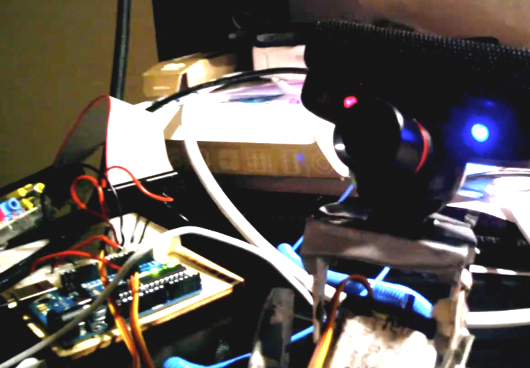
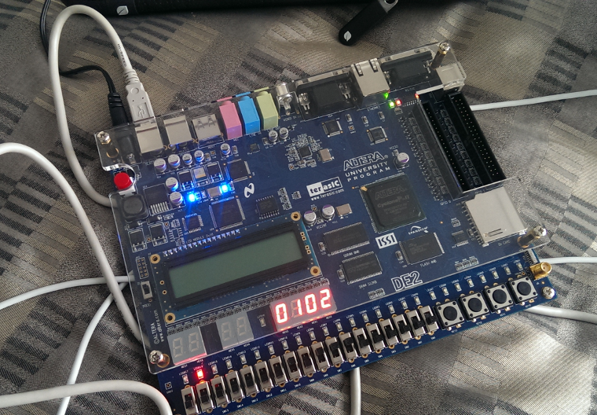
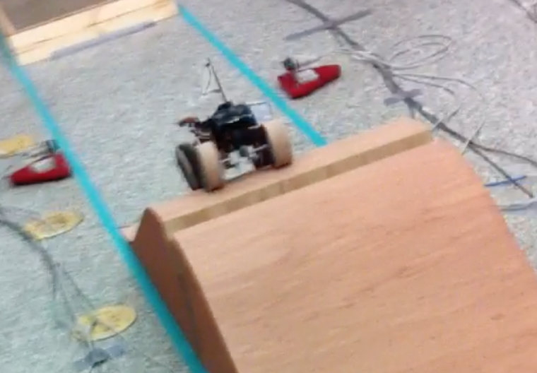

Albert Lagman
Albert Lagman
Albert Lagman
Bachelor of Applied Science
Mechanical Engineering
Mechatronics Specialization
Minor in Commerce
mechatronics. embedded. sensors. HCI
Skills

Computers
- C/C++/C#/Python
- Embedded Programming
- Concurrent Programming
- Shell Scripting
- MATLAB/Simulink/R
- VBA
- Unified Modeling Language (UML)
- FPGA (VHDL)
- Windows/Mac OSX/Linux/Unix

Robotics
- Mapping and Localization
- Computer Vision (OpenCV)
- Machine Learning
- Pathfinding
- Forward/Inverse Kinematics
- Robotics Operating System (ROS)

Electrical
- Sensors
- Control Theory and Design
- Motor Control
- Instrumentation
- Microcontrollers/ Microcomputers
- Oscilloscope
- Breadboard Prototyping
- Multimeter
- Soldering
- Semiconductors

Mechanical
- 3D Printer Prototyping
- Analytical Modelling
- AutoCAD/SolidWorks/ Siemens NX (Unigraphics)/Blender
- Machining
- Hand Tools
- Drafting
Work Experience
A collection of my experiences both in industry and volunteer work
Industry
Nestlé Waters
Capstone Project Sensor Specialist
September 2015 - April 2016
- Collaborated with a team of four to build a device that improves the quality assurance of the bottling facility
- Coordinated with suppliers to select and configure particular industrial-grade sensors appropriate for the project's goals
- Prototyped microcontroller circuit and code to implement desired functionality one month before the deadline
Canada's Michael Smith Genome Science Centre, BC Cancer Agency
Bioinformatics Co-op
January 2015 - August 2015
- Wrote over 23,000 lines of Python scripts, C++ code and shell scripts
- Actively contributed to a private GitHub repository
- Regularly investigated the sensitivity, specificity and scaling of different algorithms on datasets as large as the 20 Gb white spruce
- Created jobs for the processing of high performance computers
- Presented findings through data visualization in weekly small roundtable meetings and in quarterly Bioinformatics Technology Lab showcases.
Automotive Fuel Cell Cooperation
Unit Cell and Stack Architecture Co-op Student
May 2014 - August 2014
- Actively participated in a four-day planning workshop with Daimler, Ford, Nissan and NuCellSys engineers
- Effectively coordinated with the different validation and testing teams regarding the current major project of AFCC
- Interpreted and analyzed data from tests through coding hundreds of lines per week using VBA
- Participated and presented findings in front of a team of engineers and scientists once or twice a week
- Constructed mathematical models using MATLAB to validate theories on observed phenomena
ERCO Worldwide
Mechanical Co-op Student
September 2013 – December 2013
- Efficiently managed dozens of work orders in the sodium chlorate plant
- Facilitated the tasks for the plant maintenance shutdown
- Wrote capital requests and specifications for new equipment
- Created dozens of technical drawings such as loop diagrams and part designs using AutoCAD
- Oversaw weekly meetings with the members of different trades present in the maintenance team
Volunteer
Kababayan Academic Mentorship Program
Tutor
January 2014 - May 2014
- Tutored 30-40 newly arrived immigrants in Sir Charles Tupper Secondary School
- Assisted immigrants in adapting to a new environment by serving as a model and brother
Typhoon Haiyan Relief Work
Overall Organizer
November 2013 - December 2013
- Raised a total of $15,000 for the victims of the recent Typhoon Haiyan
- Led a team of about 50 volunteers to appeal for aid from the whole UBC community for a span of two months
- Coordinated with the Young Filipino Professional Network for a one-night charity event
Projects
A technical showcase of my personal, team and course projects.
3D Laser
Scanner
Scanner
March 2016
Course Project
Course Project
Microcontrollers, Motors, GUIs and Project Development on Overdrive
This project involved writing a project proposal and actually executing it through the use of embedded programming, GUI development, mechanical design and circuit design patterns. By the end of it, the room scanner was capable of scanning objects in a room through a mixture of a line laser, webcam and a stepper motor. I genuinely enjoyed this project for two reasons: its relation to my interests and its similarity to actual industry work. For one, microcontrollers, sensors and programming in general were always very engrossing. Furthermore, my newly acquired computer vision skills at the time reflect the ever present need to learn of an engineer. In such a short time span, my partner and I accomplished so much and had so much fun in the process.
Accelerometer and Encoder Data Acquisition
January 2016
Course Project
Course Project
Bridging the gap between theory and application...
These projects were a culmination of the different classes we were taking at the time such as microcontroller programming, control theory, controller design, user interfaces and sensors. It packed all these in simple mini-projects such as a Nintendo Wii-like gesture fighting game and a proportional positional DC motor controller. And with these, all the theory suddenly made sense.
Trajectory Tracing Robot Controller
November 2015
Course Project
Course Project
Controller design and trajectory generation at three in the morning...
Having signed up for the earliest lab schedule, this project had me on MATLAB all night designing a loop-shaping controller and a trajectory pattern of a familiar electric mouse character. Suffice to say, the next morning came and I, with barely a couple of hours of sleep, ended up being the first and only person to show up for the lab schedule that day. The best part of it all? It actually worked and the controller maintained an accuracy of 0.1mm despite not accounting for friction.
Concurrent Elevator Algorithm
November 2015
Course Project
Course Project
Several threads, processes, mutexes, rendezvous and semaphores later...
Through the use of concurrent programming constructs such as mailboxes, pipelines and data pools, an elevator algorithm was developed. I attempted to make this algorithm as efficient as possible by handling cases such as having the closest elevator respond to an elevator call and having elevators in transit stop at calls going the same direction.
UBC Snowbots Autonomous Vehicle Team
September 2014 - January 2016
Student Team Project
Student Team Project
The future is autonomous...
Initially beginning in the artificial intelligence sub-group of the software team, I found myself implementing pathfinding algorithms like A*. I eventually extended my responsibilities to include mapping implementations using Hector mapping, computer vision code in OpenCV and firmware development through Arduino. At the same time, my familiarity with the Robotics Operating System only improved as I did all of these. Come the International Ground Vehicle Competition in Michigan, the team won 4th place in design and 5th place in networking.
albertlagman.com
August 2015
Personal Project
Personal Project
A learning experience from the ground up...
This site was meant to be a learning experience for myself, while getting my name out there as I enter my final year in my mechatronics program. Having interest in the Internet of things and recognizing the prevalence of web technologies in general, I considered this an opportunity to gain a background in this field. Learning HTML, CSS and JavaScript mostly from scratch, I worked with Google’s Material Design Lite as a template and self-taught myself the syntax.
Temperature and Humidity Sensor
June 2015
Personal Project
Personal Project
Microcontrollers, web servers, drivers and beyond!
I wanted to stretch my circuitry and low-level C driver abilities through the use of an Arduino microcontroller and a Raspberry Pi microcomputer. The temperature sensor was wired to the Arduino and it then sent the readings to the Pi through serial. The Pi then was set-up as a local Apache server and broadcasted a constantly updating site using Python through Flask.
Home Media Server/Retro Video Game Console/Back-up Server
March 2015 - April 2015
Personal Project
Personal Project
Various projects born from various interests...
This is a combination of a few smaller projects I did over spring. One of which was connecting all the smart devices in my apartment from a Samsung Smart TV, a Sony PlayStation 4, an Apple TV, a laptop, a Raspberry Pi and even an Android phone all to a barely used Mac mini. I remotely configured the mini through SSH and moved all the files to turn it into a network storage that also doubled as a Plex Media Server accessible to all the other devices. On the side, a Raspberry Pi with RetroPie connected to this server to play rare old video games.
Trailrider
September 2014 - December 2015
Course Project
Course Project
Improving a product's design...
I worked in a team of six to improve upon the current design of an off-road wheelchair by the BC Mobility Opportunities. In particular, I performed stress calculations for an adjustable handle design as well as simulated the suspension design through MATLAB. My whole team then compiled these design considerations into a 400-page formal report and presented it to panel.
Face Tracking Camera
August 2014 - September 2014
Personal Project
Personal Project
A robotics experiment...
This project was a face tracking camera complete with mechanical movements to follow movements of a locked-on target. It involved the use of an Arduino for controlling the two servomotors and a Raspberry Pi for the OpenCV tracking Python script. The bracket attached to the servos was initially made of Papier Mache, but a plastic one was acquired later on.
CPU and Tron Game on an FPGA Board
January 2014 - April 2014
Course Project
Course Project
Low-level programming and hardware prototyping...
I had two main projects using the FPGA board. The first was based on VHDL wherein a simple computer was made complete with an arithmetic logic unit, registers, accumulators and memory. The second project involved low-level C Programming to create a multiplayer 2D Tron Light Cycle game controlled using the switches on the device
Arctic Hovercraft Project
April 2013
Course Project
Course Project
The engineering design process...
A prototype amphibious hovercraft was built by a team of seven with the use of lightweight materials, 3D printing, propellers and DC motors. By utilizing a methodological engineering design process paired with the creation of several physical and analytical prototypes, the team managed to complete five courses that consisted of maneuvering, speed and weight carrying. The design was then presented in the form of a report and presentation.
UBC Supermileage
September 2012 - May 2013
Student Team Project
Student Team Project
Photo by: Kevan Cote
First foray into engineering...
In this project, I participated in the mechanical team that created a fuel-efficient vehicle that competed in the Shell Eco-Marathon Americas. In particular, my team assessed 10 different engine starter solutions and did detailed design (CAD) of the decided mechanism. I was also provided an opportunity to tune, dismantle and rebuild the engine of the vehicle.
Academics
Schools
Undergraduate
- University of British Columbia (2011 - 2016)
- Bachelor of Applied Science in Mechanical Engineering
- Mechatronics Specialization
- Minor in Commerce
- University of the Philippines (2010 - 2011)
- Bachelor of Science in Computer Science (unfinished)
High School
- Xavier School, Philippines (2006 - 2010)
- Graduated with distinction
Research
LINKS: Scalable, alignment-free scaffolding of draft genomes with long reads
- Warren, R. L., Yang, C., Vandervalk, B. P., Behsaz, B., Lagman, A., Jones, S. J., & Birol, I. (2015). LINKS: Scalable, alignment-free scaffolding of draft genomes with long reads. GigaScience, 4(1), 1-11.
Awards
- Dean's Honour List (2016)
- Awarded to UBC Applied Science students taking a full-time course load with an average of at least 80%
- Rhodes Scholarship Candidate (2015)
- World-renowned scholarship for graduate studies in the University of Oxford
- UBC President's Entrance Scholarship (2011 - 2012)
- Granted from academic achievements prior to entering UBC
- Xavier Award (2008, 2010)
- Highest award for academics and character
- Magis Award (2009)
- Second Highest award for academics and character
- Best Class Adviser (2008)
- From the Para Kay Kiko tutorial program
Hobbies and Interests
I have a life...
...
...
sometimes...
- Video Games
(Snaaaaaaake!!!)
- Movies
(Are you not entertained?!)
- Working Out
(Needs 3000 calories a day)
- Soccer
(No clubs for me. Just Die Mannschaft)
- Running and Biking
(Especially in parks!)
- Martial Arts (Tae Kwon Do and Judo)
(It's all about leverage...)
- Golden Key International Honor Society (since 2012)
- UBC Kababayan Filipino Students Association (since 2011) (former president too!)
This site uses the fancyBox - jQuery Plugin by fancyApps under a Creative Commons Attribution-Noncommercial license. © 2012, Janis Skarnelis
Last modified May 12, 2016 by Albert Lagman
Last modified May 12, 2016 by Albert Lagman